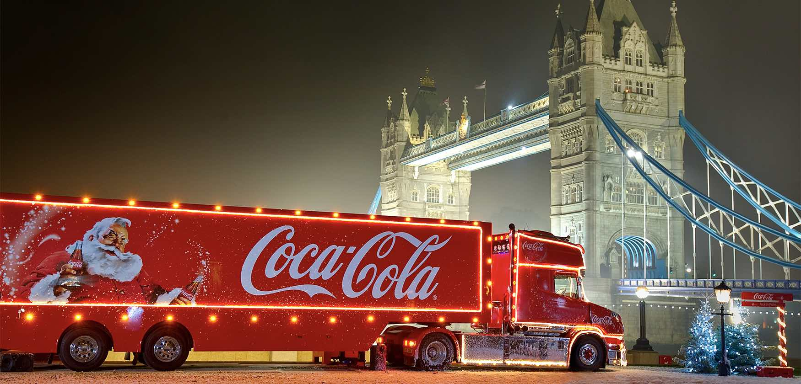

Date :December 2019 Concept : Coca Cola has always had a unified holidays (christmas/ new years )theme to their ads. They always include a line of coca cola trucks decorated with christmas lights on their way to deliver the drinks. This year it was the same but with a little message at the end saying to give back and recycle as the issue of waste was at its highest . Note:it is important to know that the reason the AD seemed re-used and not new or innovative because coca-cola as a brand heavily relys on the nostolgia element
